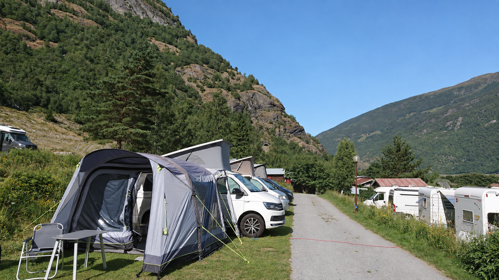
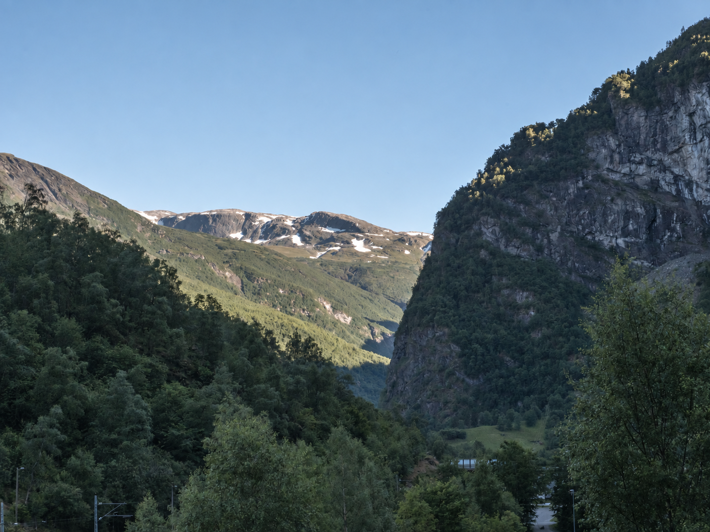
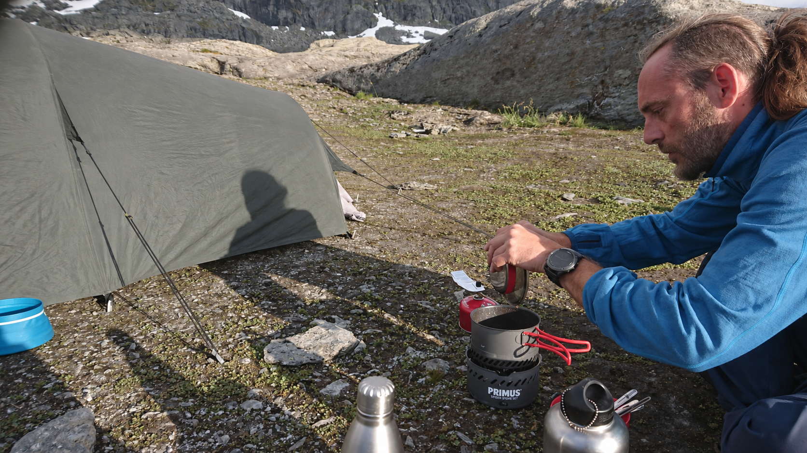
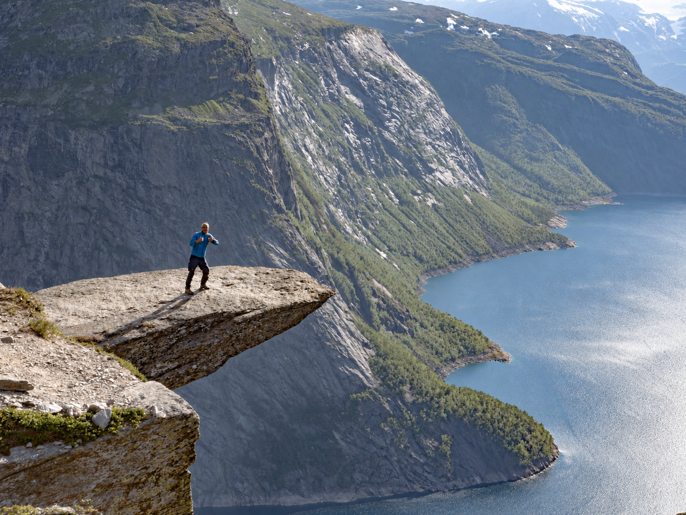
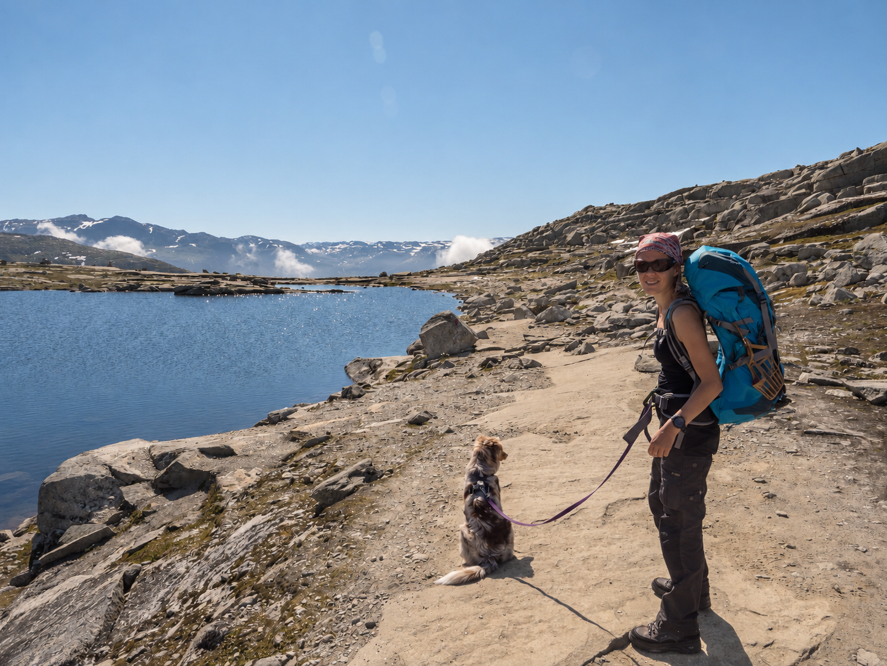
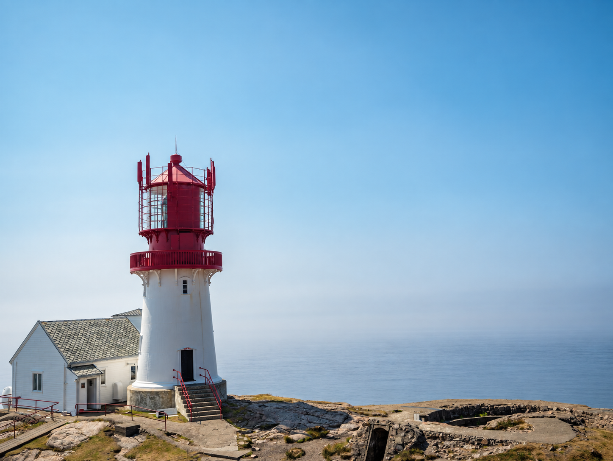
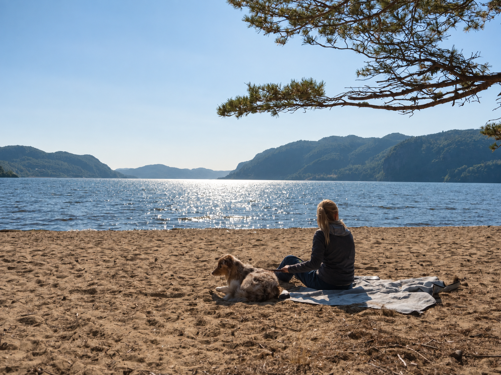

Unser Zelt steht zwischen den Steinen oberhalb des Ringedalsvatnet. Die Wanderung zur Trolltunga liegt hinter uns, der Rückweg wartet bis morgen. Wir erleben den Sonnenuntergang in den Bergen und bleiben für eine Nacht Teil dieser Landschaft. Für solche Stunden sind wir nach Norwegen gefahren: hinaus aufs Wasser, hinauf auf den Fels, mit genug Zeit, um dort auch anzukommen.
Ein langer Weg nach Norden
Am 27. Juni 2018 verlassen wir St. Pölten um 21 Uhr im Regen. Sabine, Helmut und Julie, der California und eine lange Strecke nach Norden. Über Leipzig und Hamburg geht es durch den Elbtunnel nach Flensburg. Nach wenig Schlaf und viel Straße klappen wir dort die Markise aus und stellen die Stühle neben den Van. Für eine Weile reicht dieser kleine Platz zum Ankommen.
Am 29. Juni brechen wir um 5.15 Uhr wieder auf. Kopenhagen, der Öresundtunnel, die Brücke nach Schweden: Noch bestimmen die Verbindungen zwischen den Ländern unseren Tag. Am späten Nachmittag erreichen wir Oslo. Nun beginnt der Teil der Reise, für den wir so weit gefahren sind.
Zwischen Fjordwänden
Bei Flåm stehen die Berge steil über dem Wasser. Wir lernen den Sognefjord und seine Seitenarme kennen, folgen mit dem Van den Ufern und steigen schließlich ins Kajak. Auf dem Aurlandsfjord paddeln wir rund 14 Kilometer mit unserem Grabner Riverstar; Julie ist mit dabei. Vom Wasser aus wirken die Felswände noch größer. Wasserfälle ziehen sich über die Hänge, unser rot-schwarzes Boot liegt klein dazwischen.
Diese Bootsfahrten gehören zu den schönsten Erlebnissen unserer Runde. Der geräumige Riverstar lässt sich für die Weiterfahrt im California zusammenlegen und bringt uns doch weit hinaus in die Landschaft. Vom großen Sognefjord bis zum kleinsten Fjord, den wir unterwegs besuchen, bleibt dieser Wechsel vom Fahrersitz aufs Wasser ein besonderer Teil unserer Reise.
Im Lærdalstunnel führt die Straße rund 24,5 Kilometer durch den Berg. Nach den offenen Fjordlandschaften ist die lange Fahrt unter Fels ein ganz eigener Eindruck. Später liegen auf dem Campingplatz in Flåm Karten und ein Fjordprospekt neben einer Tasse. Draußen die Berge, neben uns das Boot, im Van alles, was wir für die nächsten Tage brauchen.


Buarbreen: dem Eis entgegen
Über den Hardangerfjord kommen wir in die Gegend um Odda. Am Buarbreen liegt weiß-blaues Gletschereis über dem felsigen Gelände. Nach den Tagen an den Fjorden begegnet uns das Wasser hier in einer anderen Form: als Gletscherzunge des Folgefonna, mitten in der sommerlichen Berglandschaft.
Gerade diese Wechsel machen Norwegen für uns so eindrücklich. Zwischen den Ufern, den Wasserfällen und dem Eis liegen keine neuen Reisewelten, sondern die nächsten Wege unserer Runde. Wir bleiben draußen, schauen hin und entdecken immer wieder eine andere Seite derselben Berglandschaft.
Eine Nacht bei der Trolltunga
Am 5. Juli machen wir uns um 7.20 Uhr auf den Weg. Die Rucksäcke sind gepackt, Julie begleitet uns. Unsere Wanderung zur Trolltunga umfasst rund 23 Kilometer. Unterwegs stehen Sabine und Julie an einem Bergsee; später öffnet sich der Blick auf den Ringedalsvatnet tief unter dem vorspringenden Fels. Die Stunden zu Fuß geben diesem Ausblick sein Gewicht.
Wir haben das Zelt mitgenommen und den Rückweg für den nächsten Tag eingeplant. Am Abend schlagen wir es zwischen den Steinen auf. Helmut sitzt am kleinen Kochtopf. Was sonst der California für uns ist, übernimmt heute dieser Zeltplatz: ein Zuhause mitten auf der Reise.
Der Sonnenuntergang und der Sonnenaufgang am nächsten Morgen gehören für uns zusammen. Dazwischen liegt eine kurze nordische Nacht. Wir bleiben oben, während aus dem Wandertag eine Übernachtung in den Bergen wird. Diese Zeit über dem See ist einer der Höhepunkte unseres Norwegenabenteuers.



Über dem Lysefjord, zurück ans Meer
Auf dem Weg zum Preikestolen halten wir am Låtefossen. Wasser stürzt über dunklen Fels, bevor es für uns wieder bergauf geht. Vom Campingplatz aus starten wir zur nächsten großen Wanderung. Oben am Preikestolen liegt der Lysefjord 604 Meter unter der Felsplattform. Nach der Trolltunga stehen wir erneut hoch über dem Wasser, diesmal über einem Fjord.
Über Kvåsfossen und Lyngdal erreichen wir Lindesnes Fyr. Sabine und Julie sitzen am Wasser, der Leuchtturm steht zwischen Felsen und Meer. Von hier geht es nach Kristiansand und über Hirtshals zurück. Nach 23 Reisetagen, davon 20 in Norwegen, stehen 4.700 Kilometer und sieben Tankstopps in unserer Bilanz. In Erinnerung bleiben die Wege abseits der Straße: unser Kajak zwischen den Fjordwänden, das Eis am Buarbreen und das Zelt über dem Ringedalsvatnet.

